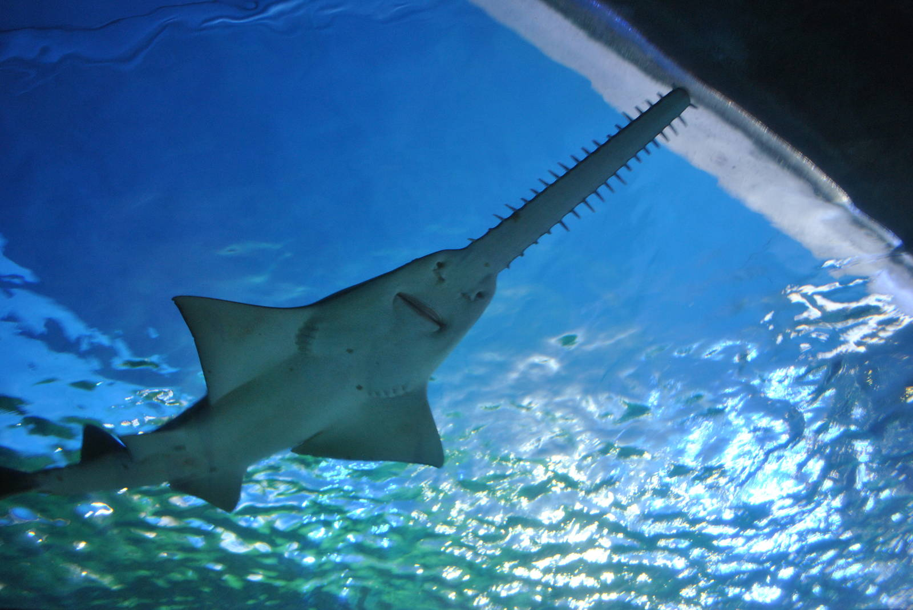

|  |
A sawshark or saw shark is a member of a shark order (Pristiophoriformes ) bearing a unique long, saw-like rostrum (snout or bill) edged with sharp teeth, which they use to slash and disable their prey.
There are eight species within the Pristiophoriformes, including the longnose or common sawshark (Pristiophorus cirratus), shortnose sawshark (Pristiophorus nudipinnis), Japanese sawshark (Pristiophorus japonicas), Bahamas sawshark (Pristiophorus schroederi),
sixgill sawshark (Pliotrema warreni), African dwarf sawshark (Pristiophorus nancyae), Lana's sawshark (Pristiophorus lanae) and the tropical sawshark (Pristiophorus delicatus).
Sawsharks are found in many areas around the world, most commonly in waters from the Indian Ocean to the southern Pacific Ocean.
They are normally found at depths around 40–100 m, but can be found much lower in tropical regions.
The Bahamas sawshark was discovered in deeper waters (640 m to 915 m) of the northwestern.
Sawsharks have a pair of long barbels about halfway along the snout.
They have two dorsal fins, but lack anal fins. Genus Pliotrema has six gill slits, and Pristiophorus the more usual five.
The teeth of the saw typically alternate between large and small. Saw sharks reach a length of up to 5 feet and a weight now of 18.7 pounds with females tending to be slightly larger than males.
The body of a longnose saw shark is covered in tiny placoid scales: modified teeth covered in hard enamel.
The body is a yellow-brown color which is sometimes covered in dark spots or blotches.
These sharks typically feed on small fish, squid, and crustaceans, depending on species.
The function of the sawshark barbels are not well understood, and neither is how they use their rostrum.
It is possible they use it in a similar fashion as sawfishes, and hit prey with side-to-side swipes of the saw, crippling them. The saw could also be utilized against other predators in defense.
The saw is covered with specialized sensory organs (ampullae of Lorenzini) which detect an electric field which is given off by buried prey.
Saw sharks life history is still poorly understood. Mating season occurs seasonally in coastal areas.
Saw sharks are ovoviviparous meaning eggs hatch inside the mother. They have litters of 3–22 pups every 2 years.
After 12 months of pregnancy, the pups are born at 30 cm long. While in the mother, pups' rostral teeth are angled backwards to avoid harming the mother.
The age of sawsharks is still poorly understood, but they are thought to live to 10 years or more.
|